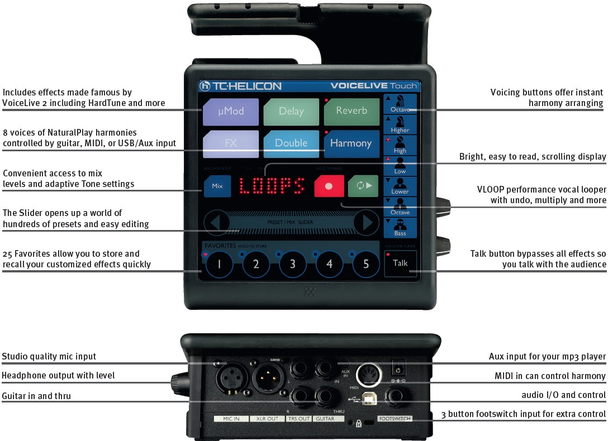

Here are some more of the features and specifications of the VoiceTouch
- Auto sensing of harmony control instrument
- 8 voices of NaturalPlay harmonies controlled by guitar, MIDI, or USB/Aux input
- Global Tone feature tailors adaptive EQ, compression and de-ess to your voice
- Includes effects made famous by VoiceLive 2 including HardTune, µMod, tap delay, reverb, harmony, doubling, and transducer.

Here is a link to the official VoiceTouch Live Technical Specifications page